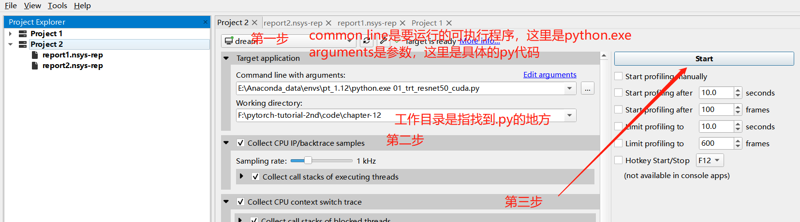
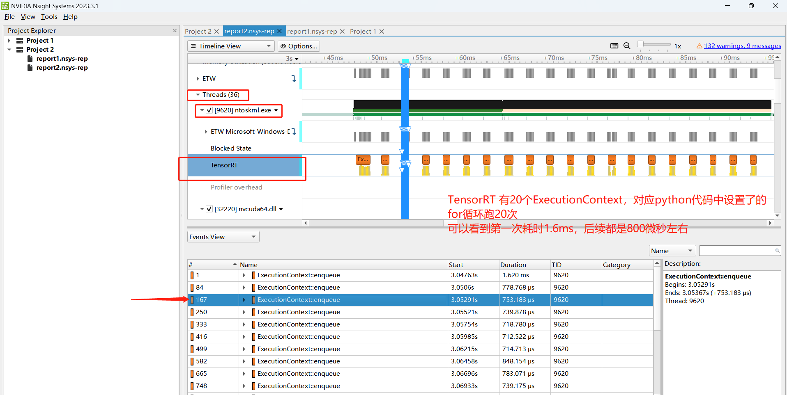

12.4 TensorRT 实用工具
前言
工程化部署是一个复杂的任务，涉及的环节众多，因此需要有足够好的工具来检测、分析，NVIDIA也提供了一系列工具用于分析、调试、优化部署环节。本节就介绍两个实用工具，nsight system 和 polygraphy。
nsight system可分析cpu和gpu的性能，可找出应用程序的瓶颈。
polygraphy可在各种框架中运行和调试深度学习模型，用于分析模型转换间的瓶颈。
nsight system
NVIDIA Nsight Systems是一个系统分析工具,它可以分析CPU和GPU的利用率、内存占用、数据输送量等各种性能指标,找出应用程序的瓶颈所在。用户文档
安装
打开官网，选择对应的操作系统、版本进行下载 。
- NsightSystems-2023.3.1.92-3314722.msi，双击安装，一路默认
- 将目录添加到环境变量：C:\Program Files\NVIDIA Corporation\Nsight Systems 2023.3.1\target-windows-x64
- 将gui工作目录页添加到环境变量：C:\Program Files\NVIDIA Corporation\Nsight Systems 2023.3.1\host-windows-x64
运行
nsys包括命令行工具与UI界面，这里采用UI界面演示。
- 命令行工具是C:\Program Files\NVIDIA Corporation\Nsight Systems 2023.3.1\target-windows-x64\nsys.exe
- UI界面是C:\Program Files\NVIDIA Corporation\Nsight Systems 2023.3.1\host-windows-x64\nsys-ui.exe
nsys运行逻辑是从nsys端启动任务，nsys会自动监控任务的性能。
第一步：启动nsys。在cmd中输入nsys-ui，或者到安装目录下双击nsys-ui.exe。
第二步：创建project，配置要运行的程序。在这里运行本章配套代码01_trt_resnet50_cuda.py。具体操作如下图所示

第三步：查看统计信息

nsight system是一个强大的软件，但具体如何有效使用，以及如何更细粒度、更接近底层的去分析耗时，请大家参照官方文档以及需求来学习。
polygraphy
polygraphy是TensorRT生态中重要的debug调试工具，它可以
- 使用多种后端运行推理计算，包括 TensorRT, onnxruntime, TensorFlow；
- 比较不同后端的逐层计算结果；
- 由模型文件生成 TensorRT 引擎并序列化为.plan；
- 查看模型网络的逐层信息；
- 修改 Onnx 模型，如提取子图，计算图化简；
- 分析 Onnx 转 TensorRT 失败原因，将原计算图中可以 / 不可以转 TensorRT 的子图分割保存；
- 隔离 TensorRT 中错误的tactic；
常用的几个功能是：
- 检验 TensorRT 上计算结果正确性 /精度
- 找出计算错误 / 精度不足的层
- 进行简单的计算图优化
安装
pip install nvidia-pyindex
pip install polygraphy
验证
polygraphy依托于虚拟环境运行，因此需要激活相应的虚拟环境，然后执行 polygraphy -h
polygraphy有七种模式，分别是 {run,convert,inspect,surgeon,template,debug,data}，具体含义参见文档
(pt112) C:\Users\yts32>polygraphy -h
usage: polygraphy [-h] [-v] {run,convert,inspect,check,surgeon,template,debug,data} ...
Polygraphy: A Deep Learning Debugging Toolkit
optional arguments:
-h, --help show this help message and exit
-v, --version show program's version number and exit
Tools:
{run,convert,inspect,check,surgeon,template,debug,data}
run Run inference and compare results across backends.
convert Convert models to other formats.
inspect View information about various types of files.
check Check and validate various aspects of a model
surgeon Modify ONNX models.
template [EXPERIMENTAL] Generate template files.
debug [EXPERIMENTAL] Debug a wide variety of model issues.
data Manipulate input and output data generated by other Polygraphy subtools.
案例1：运行onnx及trt模型
polygraphy run resnet50_bs_1.onnx --onnxrt
polygraphy run resnet50_bs_1.engine --trt --input-shapes 'input:[1,3,224,224]' --verbose
得到如下运行日志，表明两个框架推理运行成功：
......
| Completed 1 iteration(s) in 1958 ms | Average inference time: 1958 ms.
......
| Completed 1 iteration(s) in 120.1 ms | Average inference time: 120.1 ms.
案例2：对比onnx与trt输出结果（常用）
polygraphy还可以充当trtexec的功能，可以实现onnx导出trt模型，并且进行逐层结果对比。
其中atol表示绝对误差，rtol表示相对误差。
polygraphy run resnet50_bs_1.onnx --onnxrt --trt ^
--save-engine=resnet50_bs_1_fp32_polygraphy.engine ^
--onnx-outputs mark all --trt-outputs mark all ^
--input-shapes "input:[1,3,224,224]" ^
--atol 1e-3 --rtol 1e-3 --verbose > onnx-trt-compare.log
输出的日志如下：
对于每一个网络层会输出onnx、trt的直方图，绝对误差直方图，相对误差直方图
最后会统计所有网络层符合设置的超参数atol, rtol的百分比，本案例中 Pass Rate: 100.0%。
[I] Comparing Output: 'input.4' (dtype=float32, shape=(1, 64, 112, 112)) with 'input.4' (dtype=float32, shape=(1, 64, 112, 112))
[I] Tolerance: [abs=0.001, rel=0.001] | Checking elemwise error
[I] onnxrt-runner-N0-08/20/23-23:08:36: input.4 | Stats: mean=0.20451, std-dev=0.31748, var=0.10079, median=0.19194, min=-1.3369 at (0, 33, 13, 104), max=2.0691 at (0, 33, 64, 77), avg-magnitude=0.29563
[V] ---- Histogram ----
Bin Range | Num Elems | Visualization
(-1.34 , -0.996) | 29 |
(-0.996, -0.656) | 11765 | #
(-0.656, -0.315) | 31237 | ###
(-0.315, 0.0255) | 140832 | #############
(0.0255, 0.366 ) | 411249 | ########################################
(0.366 , 0.707 ) | 166138 | ################
(0.707 , 1.05 ) | 40956 | ###
(1.05 , 1.39 ) | 551 |
(1.39 , 1.73 ) | 54 |
(1.73 , 2.07 ) | 5 |
[I] trt-runner-N0-08/20/23-23:08:36: input.4 | Stats: mean=0.20451, std-dev=0.31748, var=0.10079, median=0.19194, min=-1.3369 at (0, 33, 13, 104), max=2.0691 at (0, 33, 64, 77), avg-magnitude=0.29563
[V] ---- Histogram ----
Bin Range | Num Elems | Visualization
(-1.34 , -0.996) | 29 |
(-0.996, -0.656) | 11765 | #
(-0.656, -0.315) | 31237 | ###
(-0.315, 0.0255) | 140832 | #############
(0.0255, 0.366 ) | 411249 | ########################################
(0.366 , 0.707 ) | 166138 | ################
(0.707 , 1.05 ) | 40956 | ###
(1.05 , 1.39 ) | 551 |
(1.39 , 1.73 ) | 54 |
(1.73 , 2.07 ) | 5 |
[I] Error Metrics: input.4
[I] Minimum Required Tolerance: elemwise error | [abs=8.3447e-07] OR [rel=0.037037] (requirements may be lower if both abs/rel tolerances are set)
[I] Absolute Difference | Stats: mean=2.6075e-08, std-dev=3.2558e-08, var=1.06e-15, median=1.4901e-08, min=0 at (0, 0, 0, 3), max=8.3447e-07 at (0, 33, 86, 43), avg-magnitude=2.6075e-08
[V] ---- Histogram ----
Bin Range | Num Elems | Visualization
(0 , 8.34e-08) | 757931 | ########################################
(8.34e-08, 1.67e-07) | 40058 | ##
(1.67e-07, 2.5e-07 ) | 4334 |
(2.5e-07 , 3.34e-07) | 249 |
(3.34e-07, 4.17e-07) | 181 |
(4.17e-07, 5.01e-07) | 53 |
(5.01e-07, 5.84e-07) | 0 |
(5.84e-07, 6.68e-07) | 8 |
(6.68e-07, 7.51e-07) | 1 |
(7.51e-07, 8.34e-07) | 1 |
[I] Relative Difference | Stats: mean=6.039e-07, std-dev=5.4597e-05, var=2.9809e-09, median=8.7838e-08, min=0 at (0, 0, 0, 3), max=0.037037 at (0, 4, 15, 12), avg-magnitude=6.039e-07
[V] ---- Histogram ----
Bin Range | Num Elems | Visualization
(0 , 0.0037 ) | 802806 | ########################################
(0.0037 , 0.00741) | 7 |
(0.00741, 0.0111 ) | 1 |
(0.0111 , 0.0148 ) | 0 |
(0.0148 , 0.0185 ) | 0 |
(0.0185 , 0.0222 ) | 0 |
(0.0222 , 0.0259 ) | 1 |
(0.0259 , 0.0296 ) | 0 |
(0.0296 , 0.0333 ) | 0 |
(0.0333 , 0.037 ) | 1 |
[I] PASSED | Output: 'input.4' | Difference is within tolerance (rel=0.001, abs=0.001)
[I] PASSED | All outputs matched | Outputs: ['input.4', 'onnx::MaxPool_323', 'input.8', 'input.16', 'onnx::Conv_327', 'input.24', 'onnx::Conv_330', 'onnx::Add_505', 'onnx::Add_508', 'onnx::Relu_335', 'input.36', 'input.44', 'onnx::Conv_339', 'input.52', 'onnx::Conv_342', 'onnx::Add_517', 'onnx::Relu_345', 'input.60', 'input.68', 'onnx::Conv_349', 'input.76', 'onnx::Conv_352', 'onnx::Add_526', 'onnx::Relu_355', 'input.84', 'input.92', 'onnx::Conv_359', 'input.100', 'onnx::Conv_362', 'onnx::Add_535', 'onnx::Add_538', 'onnx::Relu_367', 'input.112', 'input.120', 'onnx::Conv_371', 'input.128', 'onnx::Conv_374', 'onnx::Add_547', 'onnx::Relu_377', 'input.136', 'input.144', 'onnx::Conv_381', 'input.152', 'onnx::Conv_384', 'onnx::Add_556', 'onnx::Relu_387', 'input.160', 'input.168', 'onnx::Conv_391', 'input.176', 'onnx::Conv_394', 'onnx::Add_565', 'onnx::Relu_397', 'input.184', 'input.192', 'onnx::Conv_401', 'input.200', 'onnx::Conv_404', 'onnx::Add_574', 'onnx::Add_577', 'onnx::Relu_409', 'input.212', 'input.220', 'onnx::Conv_413', 'input.228', 'onnx::Conv_416', 'onnx::Add_586', 'onnx::Relu_419', 'input.236', 'input.244', 'onnx::Conv_423', 'input.252', 'onnx::Conv_426', 'onnx::Add_595', 'onnx::Relu_429', 'input.260', 'input.268', 'onnx::Conv_433', 'input.276', 'onnx::Conv_436', 'onnx::Add_604', 'onnx::Relu_439', 'input.284', 'input.292', 'onnx::Conv_443', 'input.300', 'onnx::Conv_446', 'onnx::Add_613', 'onnx::Relu_449', 'input.308', 'input.316', 'onnx::Conv_453', 'input.324', 'onnx::Conv_456', 'onnx::Add_622', 'onnx::Relu_459', 'input.332', 'input.340', 'onnx::Conv_463', 'input.348', 'onnx::Conv_466', 'onnx::Add_631', 'onnx::Add_634', 'onnx::Relu_471', 'input.360', 'input.368', 'onnx::Conv_475', 'input.376', 'onnx::Conv_478', 'onnx::Add_643', 'onnx::Relu_481', 'input.384', 'input.392', 'onnx::Conv_485', 'input.400', 'onnx::Conv_488', 'onnx::Add_652', 'onnx::Relu_491', 'input.408', 'onnx::Flatten_493', 'onnx::Gemm_494', 'output']
[I] Accuracy Summary | onnxrt-runner-N0-08/20/23-23:08:36 vs. trt-runner-N0-08/20/23-23:08:36 | Passed: 1/1 iterations | Pass Rate: 100.0%
更多使用案例推荐阅读github cookbook
小结
本节介绍了nsight system和polygraphy的应用，在模型部署全流程中，可以深入挖掘的还有很多，推荐查看TensorRT的GitHub下的tools目录